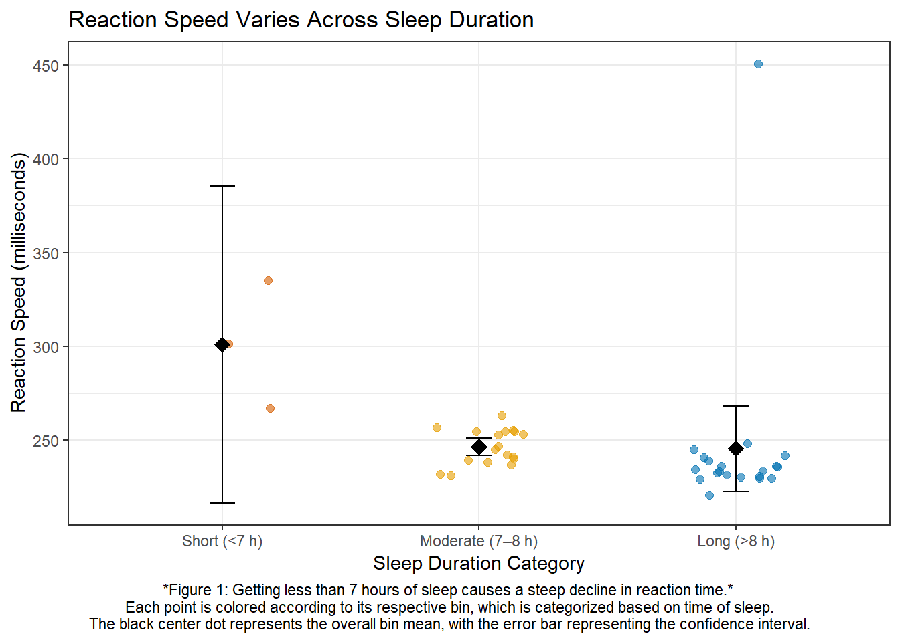
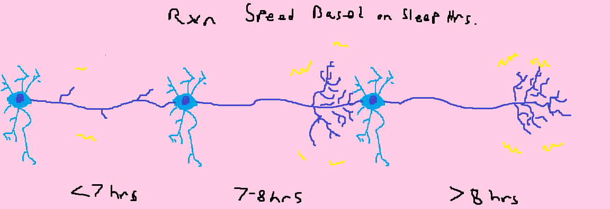
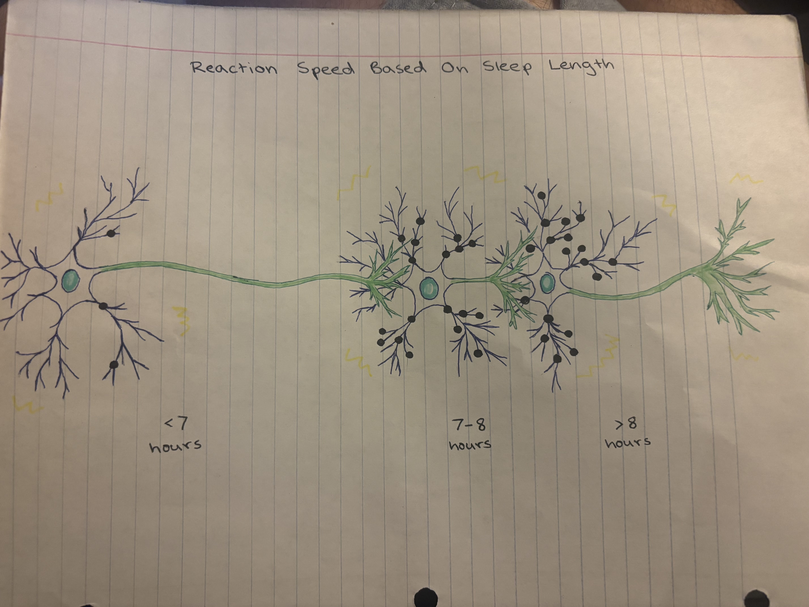
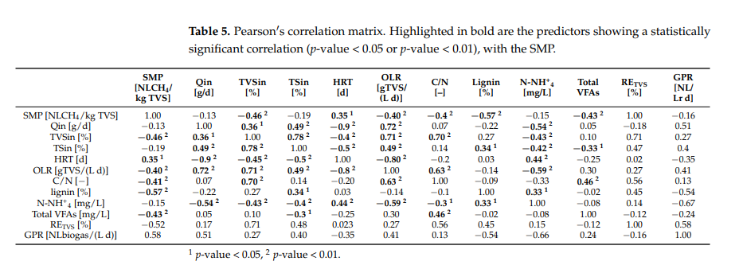

# reading in packages
library(tidyverse) # general use
library(here) # file organization
library(janitor) # cleaning data frames
library(gt) # table making
library(readxl) # reading excel files
library(ggeffects) # getting model predictions
reaction_time_data <- read.csv("C:/Users/prais/OneDrive/github/ENVS-193DS_homework-03/data/193ds spread - Sheet1.csv") |> #adding table to environment
clean_names() |> #cleaning names
mutate(
sleep_duration_hrs = period_to_seconds(hm(sleep_duration_hh_ss)) / 3600, #changing format of sleep hours data
Sleep_Duration_c = scale(sleep_duration_hrs, center = TRUE, scale = FALSE), # scaling sleep duration colummn
Sleep_Location = factor(sleep_location), # making sleep location a factor
Stress_Level = factor(stress_level), # making stress level a factor
Date = as.Date(date, format = "%Y-%m-%d")) |> # reformating date data
mutate(
SleepBin = case_when( #creating bins
sleep_duration_hrs < 7 ~ "Short (<7 h)", #creating short bin
sleep_duration_hrs <= 8 ~ "Moderate (7–8 h)", #creating moderate bin
TRUE ~ "Long (>8 h)"), #creating long bin
SleepBin = factor( #creating order of factors
SleepBin,
levels = c("Short (<7 h)", "Moderate (7–8 h)", "Long (>8 h)"))) |> # ordering sleep bin factors
select(SleepBin, Date, sleep_duration_hh_ss, reaction_speed_ms, x5_test_avg_ms, sleep_location, stress_level) #selecting important infoHomework 3
Repository: https://github.com/ckiorlinski/ENVS-193DS_homework-03
Set up
Problem 1: Personal Data
a.
I could bin recorded days into different sleep lengths, such as “Short (>7 hours)”, “Moderate (7-8 hours)”, and “Long (<8 hours)”, and then find the mean sleep time within each bin because I generally feel more alert when I have had more sleep, so I think Long sleep length will have the best reaction times.
b. & c.
# creating summary table
summary_table <- reaction_time_data |> # creating summary table from reaction time data
group_by(SleepBin) |> # grouping by bin
summarize(
mean_rt = mean(reaction_speed_ms, na.rm = TRUE), # calculating mean reaction time
se = sd(reaction_speed_ms, na.rm = TRUE)/sqrt(n()), #creating standard error from standard deviation
n = n() #number of data points
) |>
mutate( #
ci_low = mean_rt - qt(0.975, n-1) * se, # calculating low end of CI
ci_high = mean_rt + qt(0.975, n-1) * se # calculating high end of CI
)
#plotting graph
ggplot() + #creating graphic
geom_jitter( #creating jitterplot
data = reaction_time_data, #using reaction time data
aes(x = SleepBin, y = reaction_speed_ms, color = SleepBin), #setting x and y axis and color
width = 0.2, alpha = 0.6, size = 2 #setting width and transperancy
) +
geom_point( #setting mean point
data = summary_table, # summary table data
aes(x = SleepBin, y = mean_rt), #setting x and y axis
color = "black", shape = 18, size = 4 #setting symbology
) +
geom_errorbar( #creating error bar
data = summary_table, #using summary table data
aes(x = SleepBin, ymin = ci_low, ymax = ci_high), #setting x andy axis, and error bar extent
width = 0.1, color = "black" #setting symbology
) +
scale_color_manual( #setting colors
values = c(
"Short (<7 h)" = "#D55E00",
"Moderate (7–8 h)" = "#E69F00",
"Long (>8 h)" = "#0072B2"
),
guide = FALSE
) +
labs( #setting titles
x = "Sleep Duration Category", # x axis
y = "Reaction Speed (milliseconds)", # y axis
title = "Reaction Speed Varies Across Sleep Duration", # graph title
caption = "Figure 1: Getting less than 7 hours of sleep causes a steep decline in reaction time. \n Each point is colored according to its respective bin, which is categorized based on time of sleep. \n The black center dot represents the overall bin mean, with the error bar representing the confidence interval. " # graph caption
) +
theme_bw() + # theme black white
theme(plot.caption.position = "plot", # position of caption
plot.caption = element_text(hjust = .5))
d.
#creating presentable table
summary_table |> # creating summary tabke
select(SleepBin, mean_rt, ci_low, ci_high) |> # selecting relevant columns
gt() |> # table making software
cols_label( #labeling columns in table
SleepBin = "Sleep Category",
mean_rt = "Mean Reaction Time (ms)",
ci_low = "95% CI Lower",
ci_high = "95% CI Upper"
) |>
tab_header(
title = "Reaction Speed Summary by Sleep Category" #table title
) |>
fmt_number(
columns = c("mean_rt", "ci_low", "ci_high"), #rounding values
decimals = 1
)| Reaction Speed Summary by Sleep Category | |||
|---|---|---|---|
| Sleep Category | Mean Reaction Time (ms) | 95% CI Lower | 95% CI Upper |
| Short (<7 h) | 301.0 | 216.5 | 385.5 |
| Moderate (7–8 h) | 246.6 | 241.9 | 251.3 |
| Long (>8 h) | 245.6 | 222.7 | 268.4 |
Problem 2: Affective visualization
a.
Since my personal data has a lot to do with sleep and alertness, I think that it could be cool to use brain and neuron motifs in my data visualizations. To combine these two concepts, I think I can do something along the lines of having a brain encase/be the background for a graph that uses neurons to show points. Each neuron could be connected to the next in a series of three and dendrite on the neuron could represent with a point from the graph. The goal would be to show that more sleep creates more brain connections, increasing reaction speed. I could also include some aspect of electricity or energy, such as electric effects that intensify as the reaction speeds decrease.
b.

c.

d.
With this piece, I am attempting to showcase the takeaway of my experiment, which is that the amount of sleep has an effect on the reaction speed score on an online speed test immediately after waking up. The data was collected over two months and sorted into three bins: short (<7 h), moderate (7–8 h), and long (>8 h), and then mean sleep time was compared across bins.
When creating this piece, I wanted to incorporate several relevant themes into the visualization of this data, including concepts of tiredness, energy, and alertness. Although it might not look explicitly similar, I took a lot of inspiration from Jill Pelto’s paintings, specifically their ingraining of the geometry of the line in the art.
The form of my work is a drawn picture on paper using a combination of colored pencils, markers, lead pencils, and more. Conceptually, each bin is represented by a neuron with each data point being represented by a dendrite upon the axon, which is itself a representation of the error bars. The hope is to show that more sleep creates more complex neural connections with shorter pathways.
Before it took this form, my first sketch had more of a night and day gradient motif using an eye to stage the data, but I didn’t like it very much and scrapped it. This version was sketched in MS Paint before being put to paper and drawn with strong lines and colors.
Problem 3: Statistical critique
a.
They employed linear regression, both multiple and single, with the single linear regression found not the be a good assessment tool for the data. The response variable was the specific methane production, which had multiple metrics such as NL CH₄/kg and NLbiogas/kg. The predictor variables included organic loading rate (OLR), lignin content, and other factors pertaining to the preparation and makeup of the waste being processed. To form their linear regression model equations, the researchers evaluated the correlation among variables via a Pearson’s correlation matrix, which is what I am including below.

b.
Given that this table informs the creation of the MLR equation model and there is no other figure describing the MLR besides model validation graphs (what I used mistakenly for HW 2), I do not feel that this table does an adequate job of representing the underlying tests. It states that this table a “Pearson’s Correlation Matrix”, but does not showcase any sort of explanation for what that represents, nor how those values were achieved. It also highlights which correlation scores are significant, but does not explain or show how the correlation scores were translated into p values. I had to look up myseld how some correlation scores could be higher than others but not significant, which shows the failing in the representation.
c.
The visual clutter is horrible in this table to be completely honest, to the point where it almost ruins the usability of the graph for me. The only useful piece of information from the table is the first column/row because we are trying to find what variables correlate with SMP to create a regression equation, so the entire rest of the matrix is unneeded for our analysis. The use of bolding to indicate significant correlation values is okay and draws attention to the important values, but suffers from the excessive clutter of the table.
d.
I would make multiple changes to the table in order to improve its visual clarity and usefulness. Firstly, as described above, I would remove all the unnecessary information from the matrix. If the main goal is the analyze SMP, as stated in the research paper, then an entire matrix is not necessary for analysis and only serves to introduce needless information. At the very least, I would introduce a new graphic to precede the matrix that holds only the row with SMP in case the matrix is useful in a way I am not understanding. I would also increase the bolding or increase the type size to draw more attention to important metrics. Finally, I would do some more explaining or showcase more about the underlying functions, including how the correlation values convert to p values and n values.